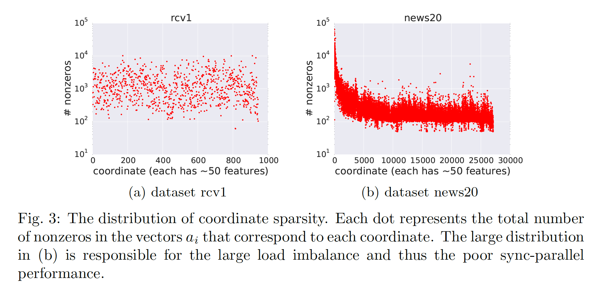
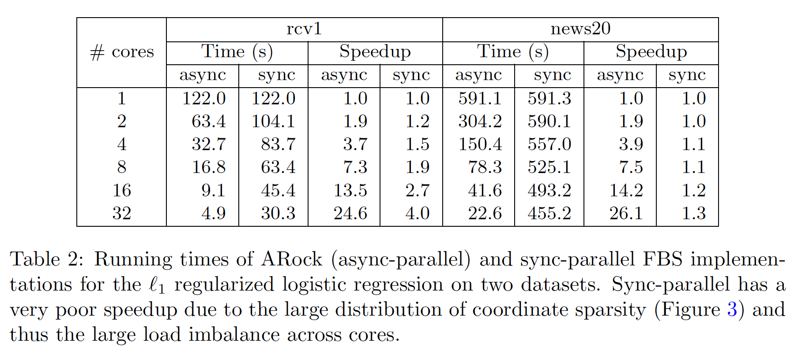

Finding a fixed point to a nonexpansive operator, i.e., , abstracts many problems in numerical linear algebra, optimization, and other areas of scientific computing. To solve fixed-point problems, we propose ARock, an algorithmic framework in which multiple agents (machines, processors, or cores) update in an asynchronous parallel fashion. Asynchrony is crucial to parallel computing since it reduces synchronization wait, relaxes communication bottleneck, and thus speeds up computing significantly. At each step of ARock, an agent updates a randomly selected coordinate based on possibly out-of-date information on . The agents share through either global memory or communication. If writing is atomic, the agents can read and write without memory locks.
Theoretically, we show that if the nonexpansive operator has a fixed point, then with probability one, ARock generates a sequence that converges to a fixed points of . Our conditions on and step sizes are weaker than comparable work. Linear convergence is also obtained.
We propose special cases of ARock for linear systems, convex optimization, machine learning, as well as distributed and decentralized consensus problems. Numerical experiments of solving sparse logistic regression problems are presented.
We compare ARock to its synchronous counterpart for solving the sparse logistic regression problem on rcv1 and news20 LIBSVM data sets. The two data sets have high variance of sparsity across all coordinates; see the figure below. For this reason, the synchronous parallel method has serious load imbalance and thus achieves very low parallelization speed-up, while ARock can achieve near-linearly speed-up; see the table below.
|  |
|  |
Z. Peng, Y. Xu, M. Yan, and W. Yin. ARock: an Algorithmic Framework for Asynchronous Parallel Coordinate Updates. SIAM Journal on Scientific Computing 38 (5), A2851–A2879.